notes with the Wind · October 2026
Small things I notice, and what the Wind says about them. First posted on Instagram, gathered here in one notebook
October 8
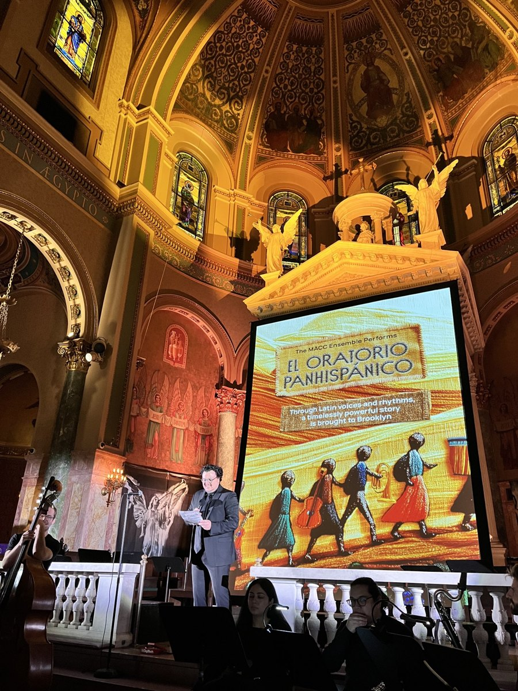
Co-Cathedral of St. Joseph
Your own branch of reality 🌿
Remember when society tried to convince us that cold logic is smarter than a felt truth, and dismissed our deep intuition as mere “overthinking” or “superstition”? 🤔
We’re told to chase the same widespread goals: buying a certain car, climbing a specific career ladder, or fitting into a predefined box. But what if we stopped following the checklist of a vehicle always hungry for material success, stopped rationalizing our choices just to stay safely inside the lines, and instead listened to what truly feels right and inspired? ✨
The vehicle taught us to become predictable little cogs in a machine, trading our inner voice for what’s “cool”. It even mocked our sensitivity and imagination, brushing them off as naive, just to make us ashamed of our power as Creators. Because the system doesn’t want you wild, and so unpredictable. It wants you manageable and predictable ⚙️
A tragedy is when the soul is laid at the feet of the ego
the ensemble
voices under the dome
🎶 On the photo and videos: El Oratorio Panhispánico by Alejandro Zuleta, performed by the MACC Ensemble (Music at Co-Cath) at the Co-Cathedral of St. Joseph in Prospect Heights, Brooklyn, April 11, 2025. The Passion story told through the eyes of Latin American migrants at the border, sung entirely in Spanish, contemporary classical music woven with Latin rhythms. The same cathedral is home to the Fort Greene Orchestra concerts
Real magic doesn’t live in a blueprint, a spreadsheet or a count of likes and views. It breathes in the quiet spaces where we finally drop the heavy armor of fear 🛡️
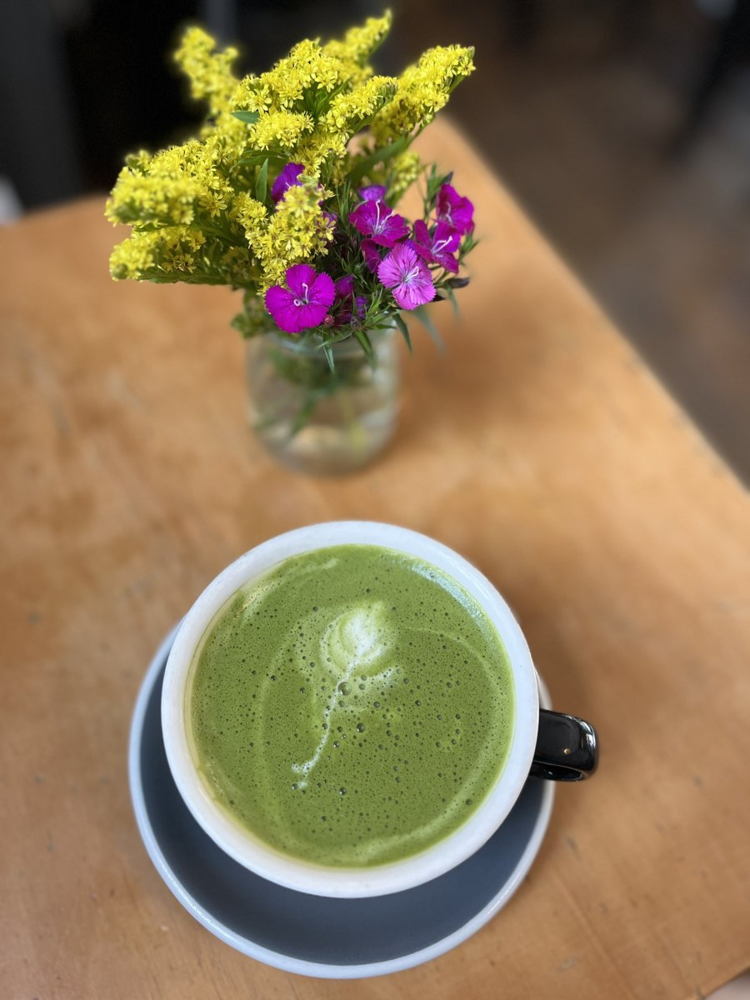
soften toward yourself
When we peel those masks away, everything shifts. Allah already showed us how to act: not through cold calculations, but through a pure intention and a genuinely kind heart. And that deep kindness has to start right here, with you. Forgiving yourself, holding space for your own doubts, and treating your own soul with tenderness 🤍
As the Quran reminds us, “Man shall have nothing but what he strives for” (53:39), and that change starts from within us first (13:11)
We don’t need to wait for permission or a miracle. We just need to soften toward ourselves, drop the rigid rules, and listen to the pulse of our own truth 🌿
The moment you trust your inner guidance and follow your soul’s invitation over the desperate vehicle, you stop blending in. You step right onto your own breathtaking branch of reality 🌬️
October 26
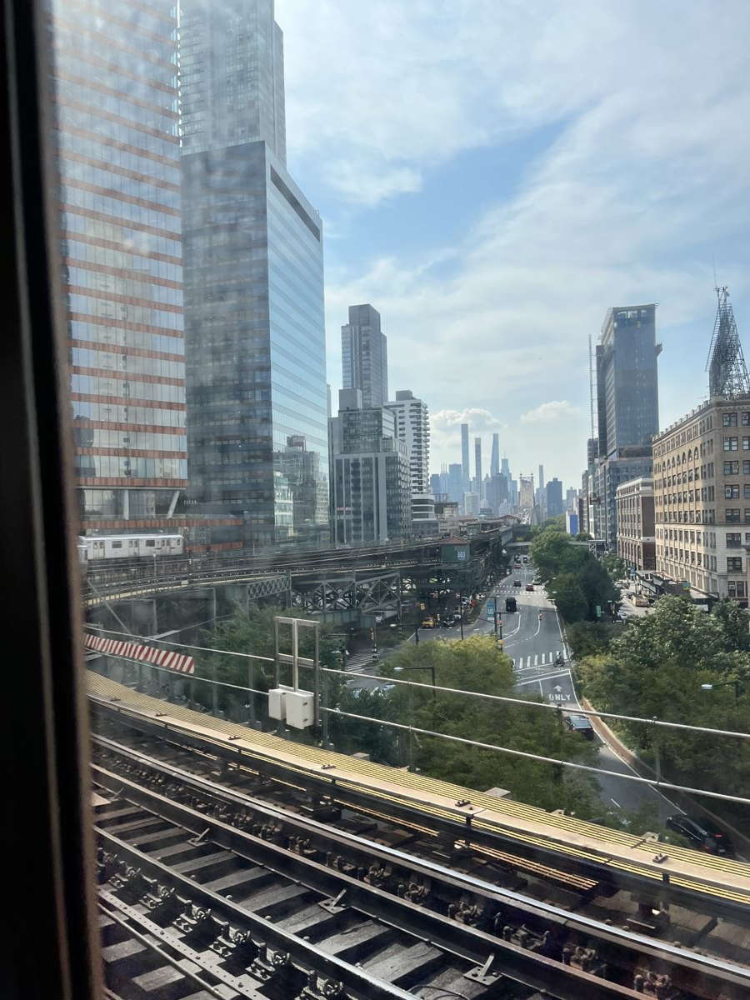
the city from the train
I was never called to keep someone else’s peace. I was meant to find the strength to improve myself and the world around me
“I’ll stay silent. I’ll tolerate it just a little longer…”
…but one day the silent endurance broke, the calm river overflowed its banks, and everything changed
An old programming whispered through generations: love must be earned, endure the intolerable for the sake of others, keep everyone’s world in balance. But constant kindness becomes invisible. When my patience is treated like a guarantee instead of a gift, I understand: holding together someone else’s chaos was never my purpose. Only myself and my inner growth
The first signal is always quiet. Not a scream, but a calm voice inside: something here is not right. Intuition doesn’t shout. Fear does. Listen to the quiet voice, and in time, while you can still breathe deeply instead of clinging to scraps of free air
My intuition knew first. My dignity and my kind heart carried me out
I didn’t stop being kind. I stopped being endlessly available for others’ expectations
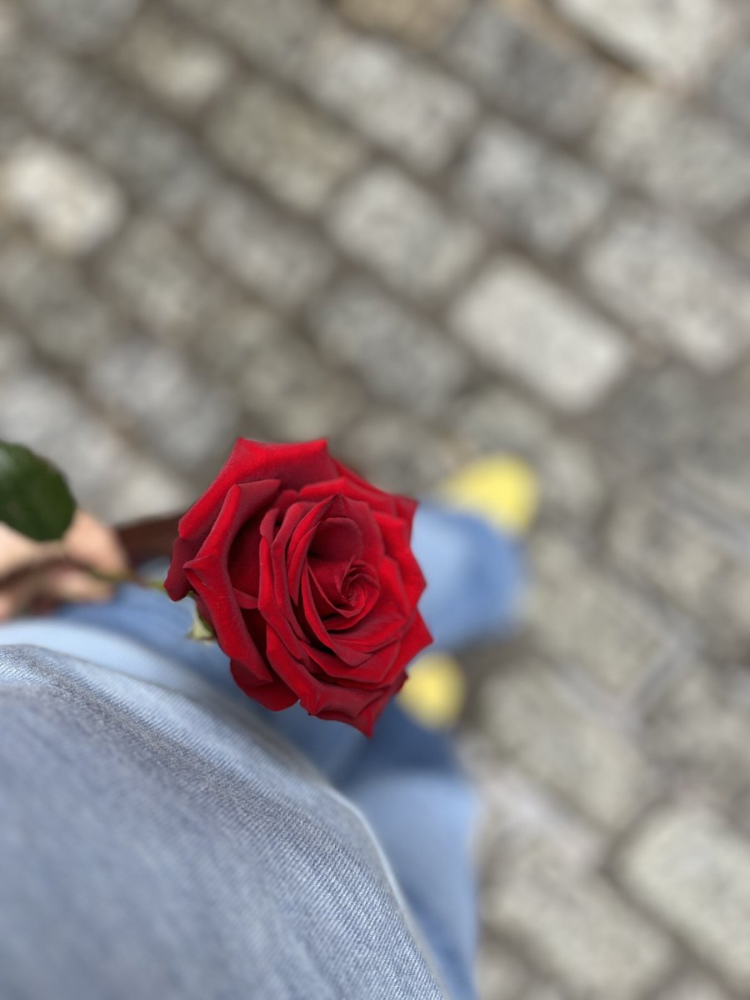
a rose for myself
True love starts at home, with mutual support and a sincere wish to see the other person grow, not with power or dependence. Real care never asks for obedience as payment, and healthy love never makes you smaller. Beside the right person you feel more confident, freer, more firmly grounded. A partner who truly loves you will never clip your wings just for the chance to carry you in their arms
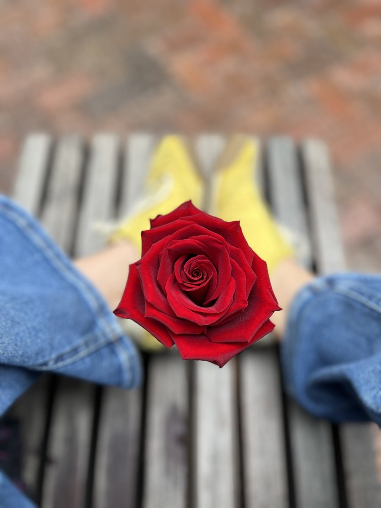
my own peace
The illusion is shattered. Breaking an old pattern doesn’t mean fixing what cannot be fixed. It takes courage to step out of it and trust the soul again. It knows the way, even while the mind still argues
I am the architect of my own peace. The greatest freedom is choosing what happens within me
November 5 · thoughts caught on the go
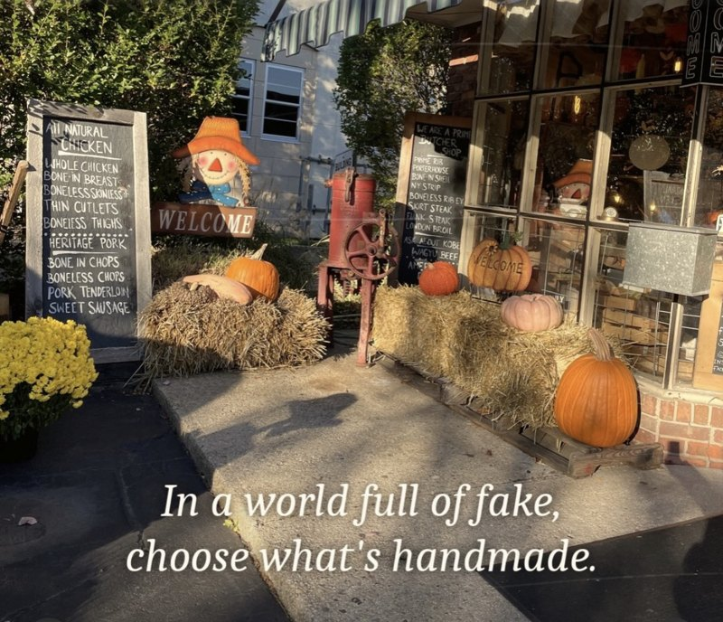
handmade
In a world full of fake, choose what’s handmade
A week of perfect faces on my screen. Perfect bodies. Perfect lies 📱 And then this: a tiny shop, chalkboards written by a real hand, real pumpkins on real hay. I stood there and almost cried 🥹 The Wind said: “Dust is loud. Seeds are quiet. Look for what someone made with their hands” 🌱
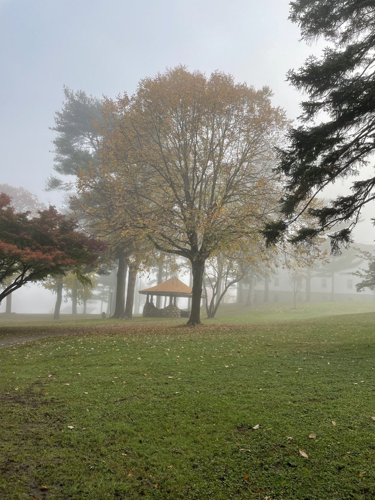
A foggy morning. An empty bench. Silence so deep I could hear my own heart 🌫️ And I understood: the people who truly changed my life never shouted. They whispered, because they had nothing to prove 🕊️ The Wind calls them whole people. Nothing hollow behind their words ✨
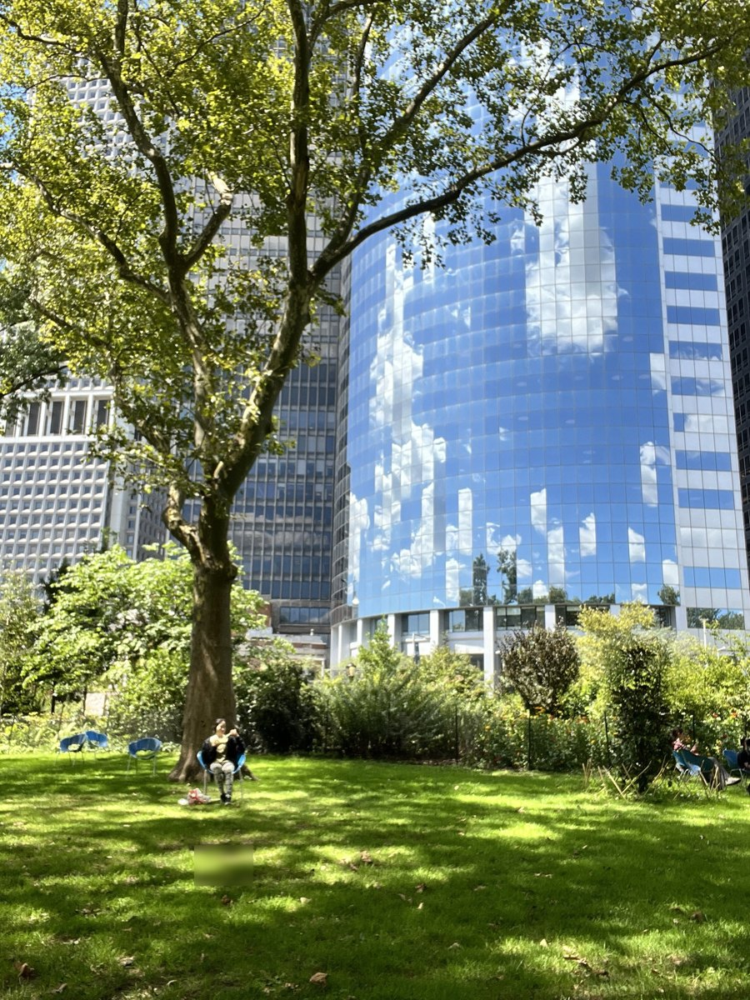
Then the Wind whispered: “You don’t dim a light because the dark is thirsty” 🕯️ Now I don’t explain. I simply recognize my own, energy to energy, soul to soul 🔥
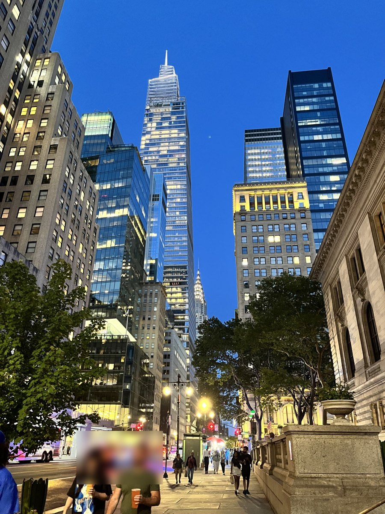
Then the Wind asked: “Is this yours?” 🤍 Now I let them fall like autumn leaves 🍂 The leaves go. The ground stays. The ground is me
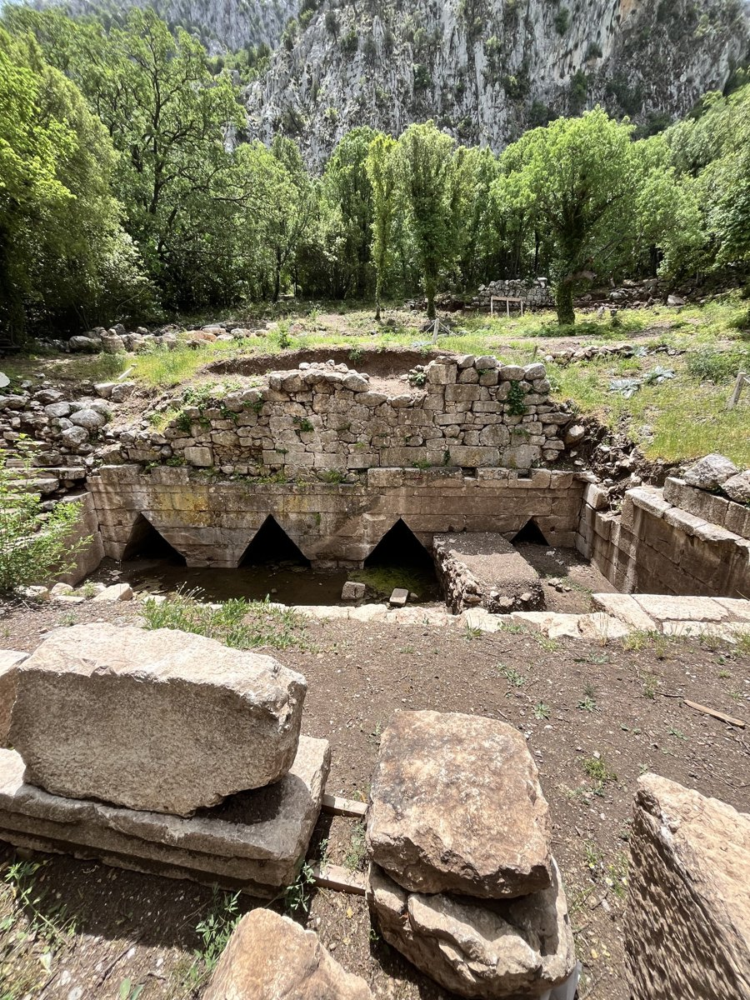
Hundreds of geese on one pond. Chaos, noise, wings everywhere 🌊 And yet each one knew exactly where its flock was. My circle is small, but every soul in it was sent to me, never by chance 🔐❤️
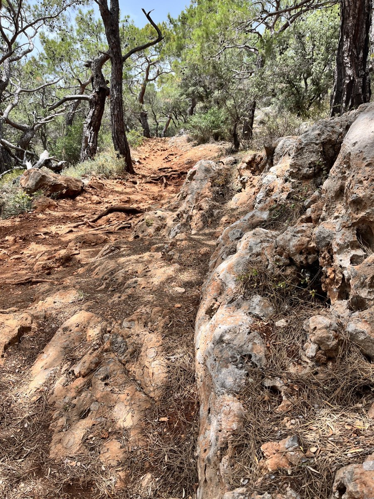
All day I searched for answers on my laptop. Tab after tab. Noise after noise 😮💨 Then I looked up, and the Wind touched my face 🌬️ My real answers never came from a search bar. They came from the steppe, the fall, the darkness, the feeling. From every story that passed through me, touching my heart and my skin 📖🔥
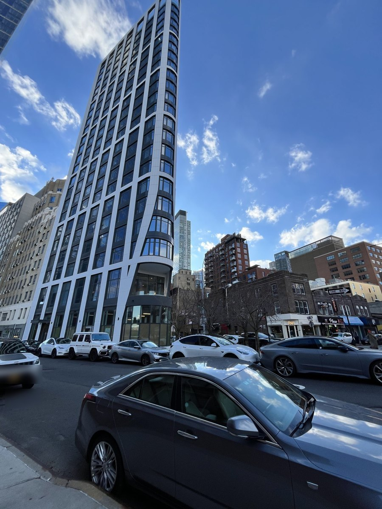
Hundreds of people rushing up the escalator. Heads down, eyes on screens, minds somewhere else ✨ Don’t just move through your life. Be the one who is here 🌬️
November 7 · after the storm
After the storm, the sky opened
a rainbow bridged the city
a golden wing lit up the trees
and one small bird flew straight through it
after the storm
Darkness eats itself
light spreads and warms
I am the bird now 🐦
if this touched you, leave a heart 🤍
tap as many times as you like
thank you, your note reached me 🤍